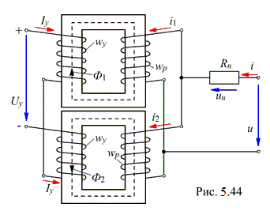

5.5.2.2. Устройство магнитных усилителей

Один из вариантов устройства МУ показан на рис. 5.44. Магнитный усилитель состоит из двух ферромагнитных магнитопроводов, на каждом из которых размещена рабочая обмотка wр и обмотка управления wу.
Рабочие обмотки соединяют, как показано на рисунке, параллельно или последовательно и подключают последовательно с приёмником Rн к источнику синусоидального напряжения u. Обмотки управления соединены последовательно с источником постоянного напряжения Uу и встречно между собой (для значительного уменьшения переменных ЭДС, наводимых в обмотках переменными составляющими магнитных потоков Ф1 и Ф2).